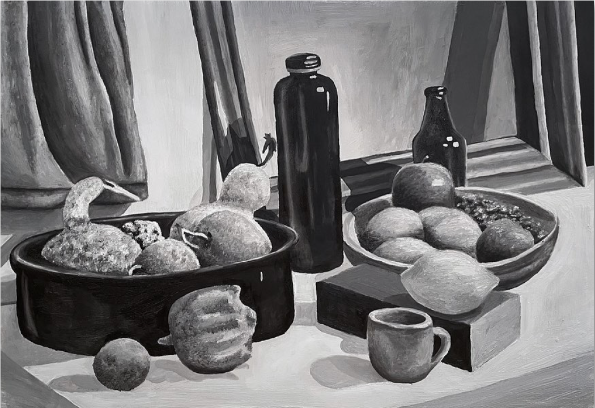
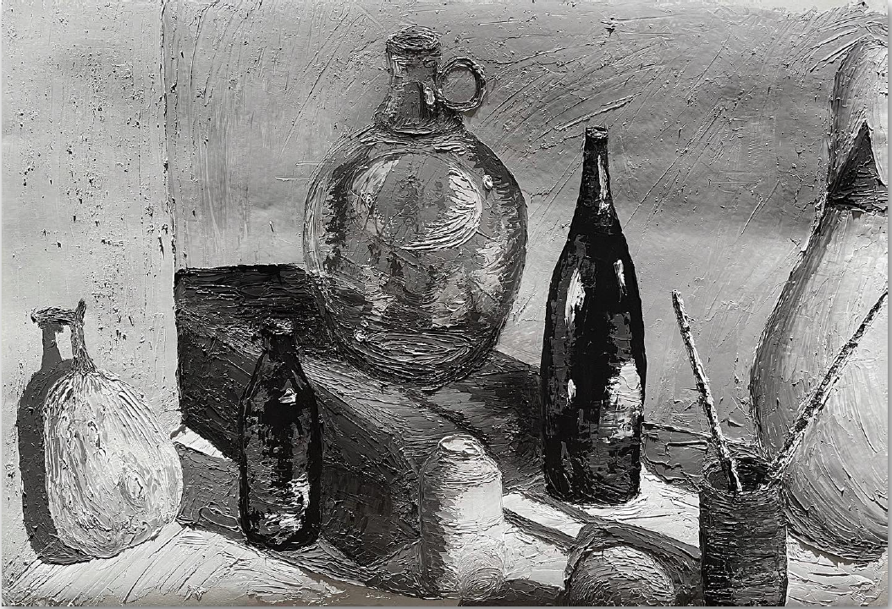
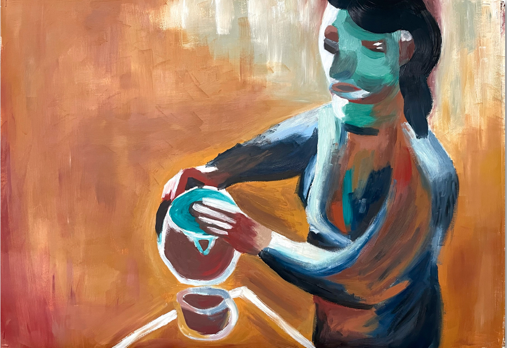
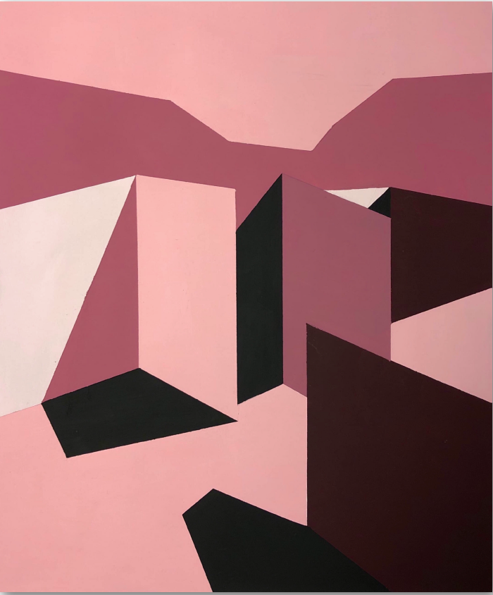
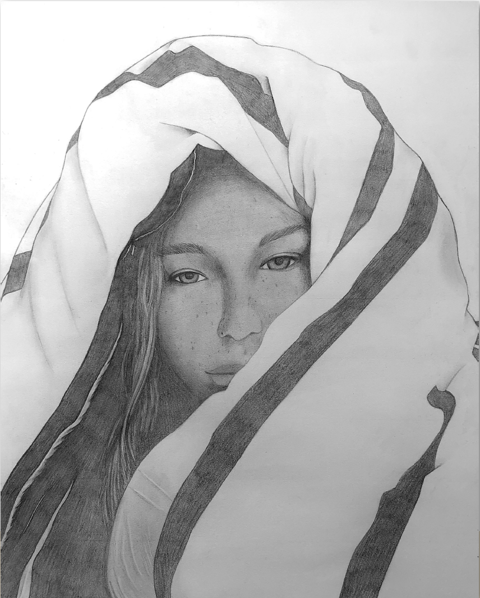
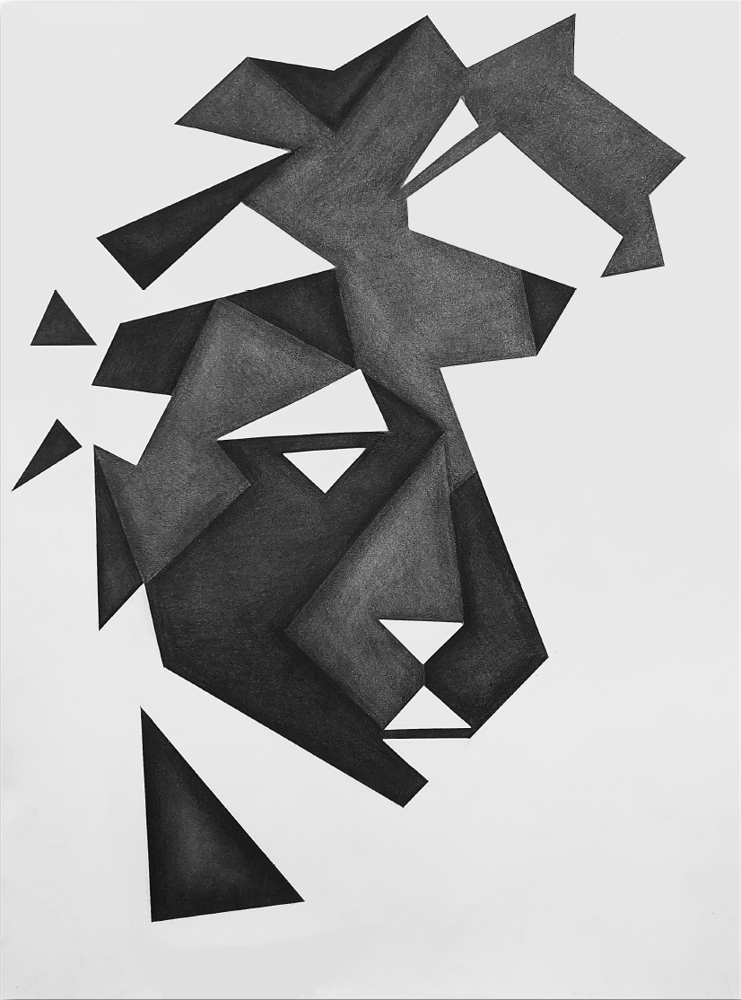
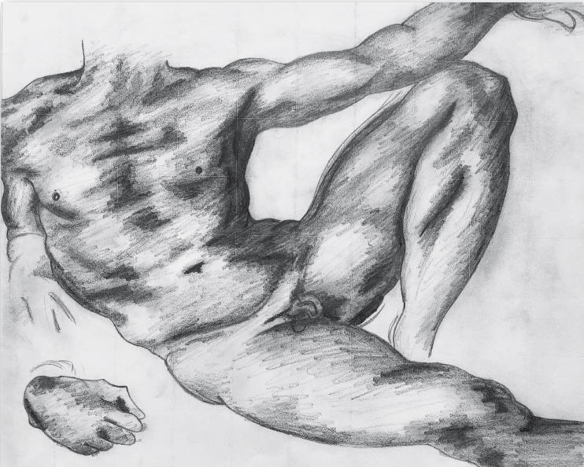

Emily Kunkel
Portfolio
Home
Digital Designs
Photography
Illustrations
Paintings
Containers in Oil Paint
Pallett Knife Oil Painting
David Park's "Woman With Coffee Pot" Mock
Pink Abstract
Drawings
Self Portrait
Abstract Charcoal
Michelangelo Mock Drawing